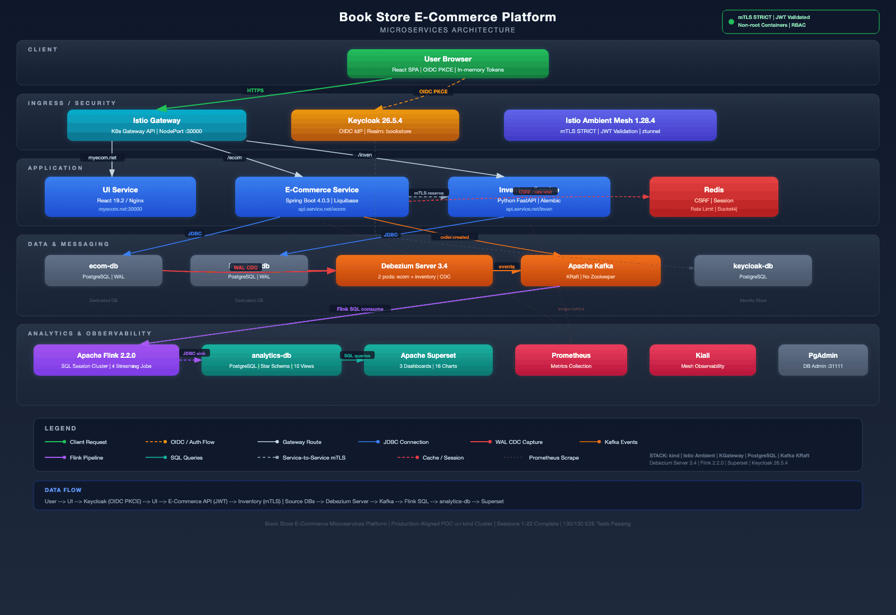

BookStore Platform
Production-grade microservices e-commerce bookstore on Kubernetes
Infrastructure Architecture

Architecture at a Glance
| Layer | Components | Technology |
|---|---|---|
| Client | Single-page application, OIDC login | React 19.2 + Vite, PKCE (S256) |
| Ingress / Security | Gateway routing, mTLS mesh, JWT validation | Istio Ambient 1.28.4, K8s Gateway API |
| Application Services | E-Commerce API, Inventory API, Admin API | Spring Boot 4.0.3, FastAPI |
| Identity | OIDC provider, RBAC, realm management | Keycloak 26.5.4 |
| Data & Messaging | 4 isolated databases, event streaming, CDC | PostgreSQL, Kafka KRaft, Debezium Server 3.4 |
| Analytics & BI | Stream processing, star schema, dashboards | Flink 2.2.0 SQL, Superset (3 dashboards, 16 charts) |
| Observability | Metrics, service mesh visualization, DB admin | Prometheus, Kiali, PgAdmin |
Key Architecture Decisions
Service Mesh & Zero Trust
Istio Ambient Mesh provides mutual TLS across all service-to-service communication without sidecar proxy overhead. ztunnel handles L4 encryption transparently. AuthorizationPolicies operate at L4 only (namespace + SPIFFE principal), compatible with the sidecar-free ambient model. JWT validation occurs independently at every backend service — no service trusts upstream claims.
Authentication & Authorization
Keycloak 26.5.4 as OIDC Identity Provider. Authorization Code Flow with PKCE (S256). Tokens stored in memory only — never in localStorage. Back-channel logout via POST (no Keycloak redirect). Role-based access: customer vs admin realm roles.
Event-Driven Architecture
Two Debezium Server 3.4 pods capture PostgreSQL WAL changes into Kafka topics. Apache Flink 2.2.0 runs four streaming SQL jobs with exactly-once semantics, transforming CDC events into a star schema. Kafka runs in KRaft mode (no Zookeeper).
Data Architecture
Strict database-per-service isolation: four PostgreSQL instances with no cross-database access. Schema migrations run as Kubernetes init containers (Liquibase for Java, Alembic for Python). Star schema in analytics-db with fact tables, dimension tables, and 10 views powering Superset dashboards.
API Design
RESTful APIs built with Spring Boot 4.0.3 (Java) and FastAPI (Python). Kubernetes Gateway API handles all ingress routing via HTTPRoutes — no Ingress resources. Rate limiting uses Bucket4j backed by Redis. CSRF tokens stored server-side in Redis.
Observability Stack
Prometheus scrapes Istio telemetry (istiod + ztunnel) and application metrics. Kiali provides real-time service mesh topology visualization with traffic flow. Apache Superset delivers business analytics across three dashboards with 16 charts covering sales, inventory, and revenue.
Live Data Flow

User Request Flow
Browser → Istio Gateway → UI Service (React SPA)
Browser → Keycloak (OIDC PKCE login)
UI → E-Commerce API (JWT-protected)
E-Commerce → Inventory Service (service-to-service mTLS)CDC Pipeline
Source DBs → Debezium Server 3.4 → Kafka → Flink 2.2.0 SQL → analytics-db → SupersetCheckout Flow
- User submits checkout — E-Commerce Service validates cart and JWT
- E-Commerce calls Inventory Service over mTLS to reserve stock
- Order persisted;
order.createdevent published to Kafka - Debezium captures DB change → Kafka → Flink transforms → analytics-db
- Superset dashboards reflect new order data in real time
Security Invariants
- All inter-service traffic encrypted via Istio mTLS (STRICT mode)
- JWT validated independently at every backend service
- Non-root containers with read-only root filesystems and all capabilities dropped
- Secrets managed exclusively through Kubernetes Secrets (no hardcoded config)
- NetworkPolicies enforced per namespace
- CSRF tokens stored server-side in Redis
Test Coverage
- 155 end-to-end tests via Playwright (all passing, zero flaky)
- Unit tests for both backend services (JUnit, pytest)
- CDC pipeline verification: insert → poll analytics DB within 30s
- Smoke tests covering pods, HTTP routes, Kafka, and Debezium health
Technology Stack
| Category | Technology | Version |
|---|---|---|
| Frontend | React + Vite | 19.2 |
| Backend (Java) | Spring Boot | 4.0.3 |
| Backend (Python) | FastAPI | latest |
| Identity | Keycloak | 26.5.4 |
| Service Mesh | Istio Ambient | 1.28.4 |
| Gateway | Kubernetes Gateway API | istio |
| Databases | PostgreSQL | 4 instances |
| Messaging | Apache Kafka | KRaft mode |
| CDC | Debezium Server | 3.4.1 |
| Stream Processing | Apache Flink | 2.2.0 |
| BI / Analytics | Apache Superset | latest |
| Observability | Prometheus + Kiali | — |
| Cache / Sessions | Redis | — |
| E2E Testing | Playwright | latest |
| Container Orchestration | Kubernetes (kind) | — |